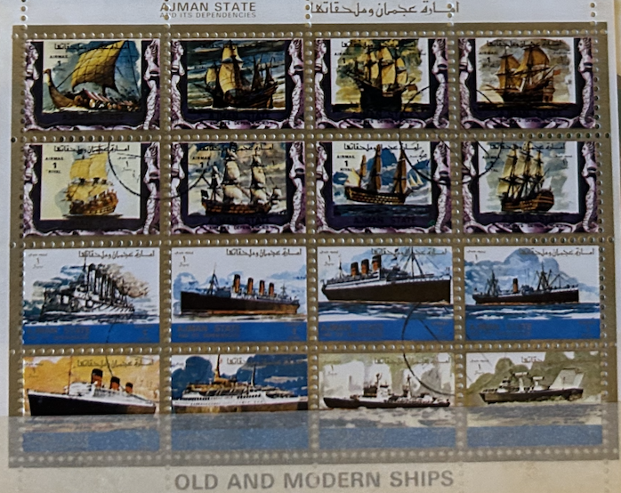
| SOURCE | TITLE| IMAGE MATCH | click to source page |
| eBay | UNITED ARAB EMIRATES 1972 UAE AJMAN OLD & MODERN SHIPS FAMOUS PEOPLE STAMP SET | eBay | 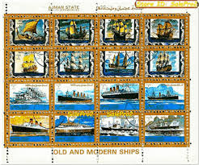 |
| eBay | O0728 IMPERF 1973 AJMAN SAILING SHIPS LINERS TITANIC TRANSPORT SH MNH | eBay | 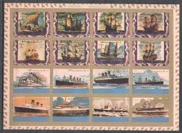 |
| eBay | Shipping to United Arab Emirates | eBay | 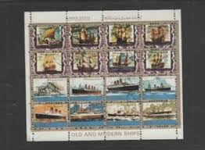 |
| Stamp Community Forum | Ajman : 8 Modern Ships. - Stamp Community Forum | 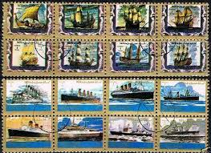 |
| Allegro | Statki Merioru - Janny - Niska cena na Allegro | 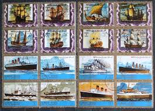 |
| Aukro | Doprava lode Ajman BL | Aukro | 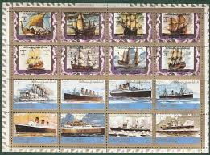 |
| brainquire.com | STAMPS SHIPS AND BOATS | 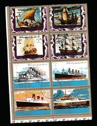 |
| PicClick UK | UNITED ARAB EMIRATES-TRUCIAL States selection: mainly Ajman: butterflies £0.99 - PicClick UK | 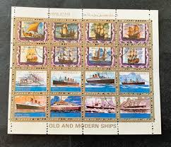 |
| eBay | AJMAN SHIPS MINI-SHEET 1973 CTO USED OLD VINTAGE STAMP | eBay | 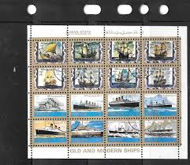 |
| eBay | ARAB EMIRATES MIDDLE EAST TOPICALS SHIPS & BOATS USED MINI SHEET LOT(UAE 366) | eBay | 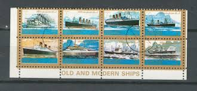 |
| ebid.net | Ajman stamps 1960's? - Airmail - Ships x6 on eBid United States | 160278085 | 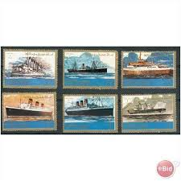 |
| eBay | Ajman: full set of 16 used/CTO small stamps, Ships, 1973, Mi#2877-92 | eBay | 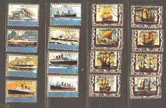 |
| eBay | 621 - Ajman - United arab Emirates - Ships - Used Set | eBay | 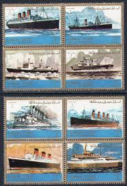 |
| eBay | AJMAN ARAB EMIRATES SHIPS & BOATS USED SET OF STAMPS LOT (AJ 207) | eBay | 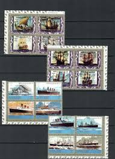 |
| Stamp Community Forum | Ajman : 8 Modern Ships. - Stamp Community Forum | 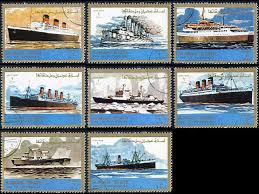 |
| eBay | ROWLAND HILL- SHIPS- SC415-19 ISSUE MAURITANIA | eBay | |
| eBay | Transport D20 Ships - 16v Mauritania 1979 | eBay | 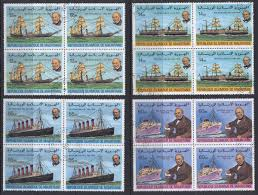 |
| eBay | FUJEIRA Mi 234-42 NH issue of 1968 - SHIPS | eBay | 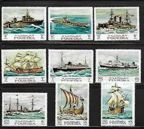 |
| eBay | UNITED KINGDOM SELECTION MNH BOATS & SHIPS STAMPS LOT (UK 568) | eBay | 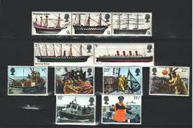 |
| eBay | Souvenir Sheet Mauritanian Stamps for sale | eBay | 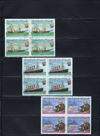 |
| eBay | Sailing Middle Eastern Stamps for sale | eBay | 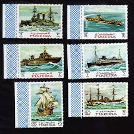 |
| eBay | Mauritanie Sc#415 -419 MNH FVF Set-4 + Souv Feuille Rowland Hill Vapeur Bateau | eBay | 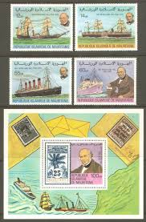 |
| eBay | AR131 1968 FUJEIRA AIR MAIL SHIPS TRANSPORT #234-42 SET MNH | eBay | 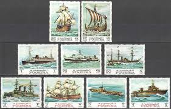 |
| eBay | Vintage Republique Islamique DE Mauritania Set Postage Stamps. 30 Stamps | eBay | 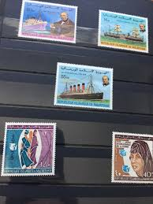 |
| eBay | FUJEIRA 1968 SHIPS MI: 234-242 MNH | eBay | 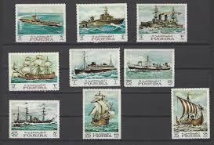 |
| Mystic Stamp Company | YP222 - Ships Stamps - Mystic Stamp Company | 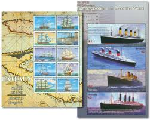 |
| eBay | Transport D25 Steam Ship - Sheet 1979 Mauritania /55um/ | eBay | 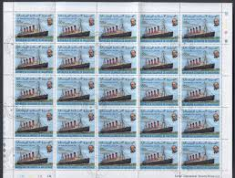 |
| trustpointelectric.com | MAURITANIA STAMPS | 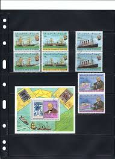 |
| Etsy | C1937 the STORY of NAVIGATION Complete SET of 50 Original Tobacco Cigarette Cards - by Churchmans - Etsy | 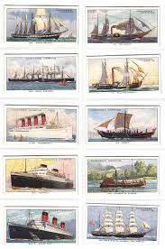 |
| Etsy | Atlantic Records Cigarette Cards by Richard Lloyd Set of 25 Issued in 1936 History Sailing Ships Speed Records Rare Gift - Etsy Denmark | 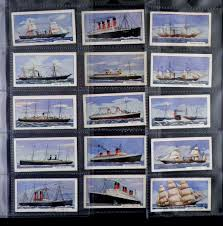 |
| Etsy | Timbres-poste. Timbre de Grande-Bretagne et de l'île Maurice, reine Élisabeth II de Grande-Bretagne - Etsy France | 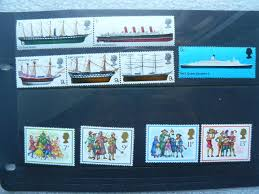 |
| eBay | GB 1969 GPO COLLECTORS SPECIAL PRE DECIMAL YEAR GIFT PACK CP807b MINT STAMP SET | eBay | 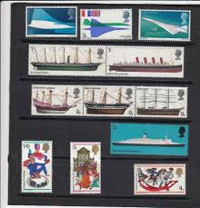 |
| eBay | AR019 1973 IMPERF AJMAN AIR MAIL TRANSPORT SHIPS & BOATS 16BL MNH | eBay | 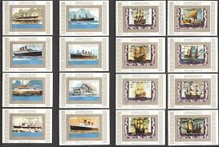 |
| eBay | Fujeira 1968 Ships Aircraft Carrier Boats Transport War Sailing 9v perf MNH | eBay | 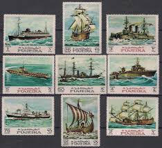 |
| eBay | Mauritania 415-418,419 imperf,MNH.Mi 636B-640B. Sir Rowland Hill,1979.Ships. | eBay | 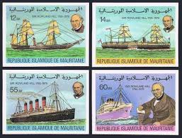 |
| Stamp Community Forum | Dhufar Bogus Stamps - Stamp Community Forum | 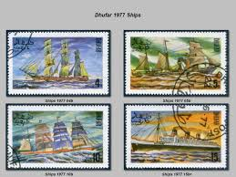 |
| eBay | AR021 1973 AJMAN AIR MAIL TRANSPORT SHIPS & BOATS 16BL MNH | eBay | 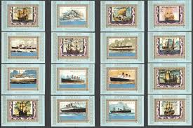 |
| Mainyk.lt | Pašto ženklai - blokai su laivais Vilnius - parduoda, keičia | Mainyk.lt | 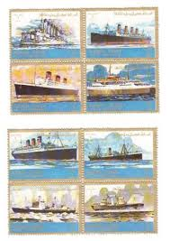 |
| eBay | Mauritania Boats 1979 (106) Yvert No. 418 To 421 Canceled Used | eBay | 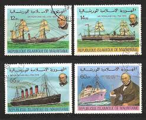 |
| Etsy | Story of Navigation Complete Set of 50 by WA & AC Churchman Cigarette Cards Issued 1936 Ships Boats Maritime Navigation Rare - Etsy Israel | 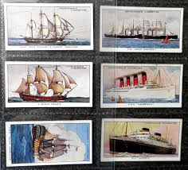 |
| eBay | Mauritania 415-418 deluxe,MNH.Michel A636-A639. Sir Rowland Hill,1979.Ships. | eBay | 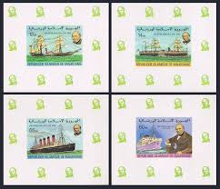 |
| turtlestampcollecting.com | Marshall Islands - Turtle and Tortoise Stamp Collecting | 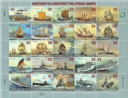 |
| eBay | St Vincent MNH 2348-51 Ships TA389 | eBay | 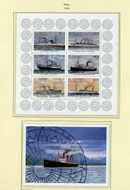 |
| eBay | Mauritania 1979 Rowland Hill set imperf deluxe SSs | eBay | 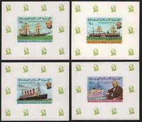 |
| viking | Postage stamp art, Postage stamps, Postal stamps | 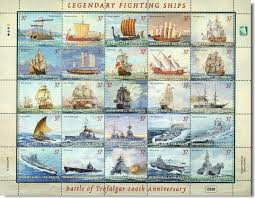 | |
| Avion Thematics | Brazil 1930 Air 20,000r Violet With Graf Zeppelin USA Overprint Doubled Being A 'Hialeah' Forgery Imperf On Gummed Paper , stamps on aviation, stamps on airships, stamps on zeppelins, stamps on forgeries | 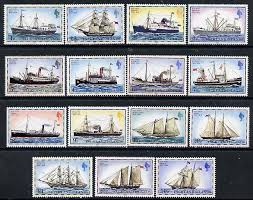 |
| Etsy | 18 WORLD STEAM SHIPS Vintage Used Postage Stamps Collector Set Ideal for Nautical Art and the Ship Enthusiast Gift 18STSHA - Etsy | 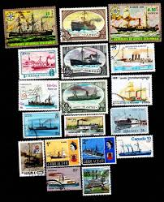 |
| AbeBooks | Complete Set of 50 'The Blue Riband Of The Atlantic' Ogden's Cigarette Cards (1929): (1929) Manuscript / Paper Collectible | Print Matters | 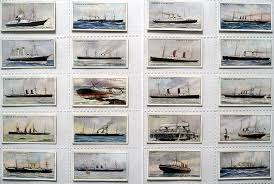 |
| eBay | Mauritania 1979 Death Cent Rowland Hill SG614/7 UM MNH unmounted mint | eBay | 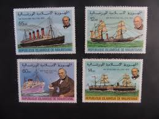 |
| Etsy | Postage Stamps. Fujeira 1968, Ships. Vintage Timbres. Philately. - Etsy | 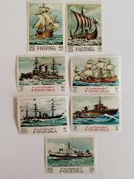 |
| eBay | stamps Fujeira 1968 Sailing ships MNH | eBay | |
| eBay | Chad Stamp 745 - Ships | eBay | |
| eBay | Grenadian Ship & Boat Postal Stamps for sale | eBay | |
| Kenmore Stamp | History's Greatest Fighting Ships - Save $3.50 On This Mint Sheet | |
| I G Stamps (igstamps) – Profile | Pinterest | ||
| eBay | Falkland Islands Scott 260a-274a Mint never hinged. | eBay | |
| eBay | St Vincent & the Grenadines Stamps for sale | eBay | |
| eBay | Mauritania Historical Ships set 1979 A-4 | eBay | |
| Rowan S Baker | British Stamps | Browse Stamps | Presentation Packs All Collection |